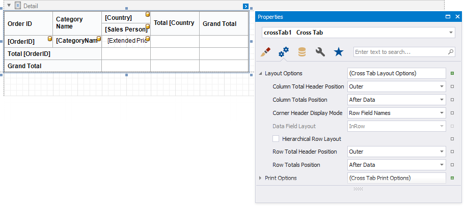
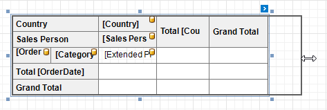
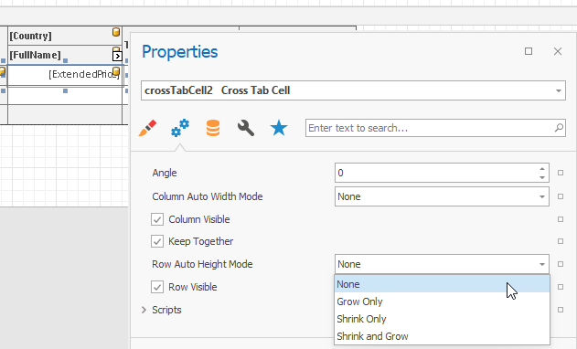

Layout and Print Options
Use the Layout Options property to change the cells' order and location.

Column Total Header Position, Row Total Header Position
Specifies where to display column/row total headers:- show in the same row/column as column/row field values against which totals are calculated (Inner);
- span across two rows/columns (Outer).
Column Totals Position, Row Totals Position
Specifies the position of the column/row totals and column/row grand totals:- after column/row field values (After Data);
- before column/row field values (Before Data).
Corner Header Display Mode
Specifies what data the Cross Tab should display in the top left corner:- split the corner into columns and display row field names (Row Field Names);
- split the corner into rows and display column field names (Column Field Names);
- do not split the corner and do not display any text (None).
Data Field Layout
Specifies how to arrange two or more data fields in the Cross Tab layout:- in a row one after another (InRow);
- in a column one under another (InColumn).
Hierarchical Row Layout
Specifies how to display row headers:- in a tree-like view one under another (checked)
- in a single line (unchecked).
Hide Specific Rows and Columns
Use a cell's Row Visible and Column Visible properties to specify row and column visibility. For instance, select the bottom right cell and disable these options to hide grand totals. At design time, invisible cells are filled with a hatch brush.

Print Options
Use the Print Options property to specify print options and define which Cross Tab elements to print.

Print Layout
Specifies how to print the Cross Tab content that does not fit the page's width:- on the next page (Across Only);
- on the same page below the previous content (Across Then Down).
Across Then Down Offset
Specifies the vertical distance between parts of the Cross Tab content in the Across Then Down print layout.Print Totals For Single Values
Specifies when to print totals:- for any field value even when it contains one nested value (checked);
- for the field values that contain two and more nested values (unchecked).
Repeat Row Headers, Repeat Column Headers Specifies whether to repeat row/column headers when the Cross Tab content is split horizontally/vertically or print them only once.
Note
Cross tab cells are split between pages if they do not fit the page's width or height. Set the report's Vertical Content Splitting and Horizontal Content Splitting properties to Smart Smart to move cells to the next page (or to the Cross Tab's next part shown on the same page.
Adjust Control Size
Drag the Cross Tab's handlers to change its size. You can also resize individual rows and columns.

Use a cell's Column Auto Width Mode property to specify a cell width calculation method.

Use a cell's Row Auto Height Mode property to specify whether and how a cell's height changes to fit its content.

Column widths are changed before row heights.
Adjust Header Text
You can double-click any cell that displays the header and use the in-place editor to enter text.

Each Cross Tab cell provides the Angle property that allows you to rotate the cell's text.